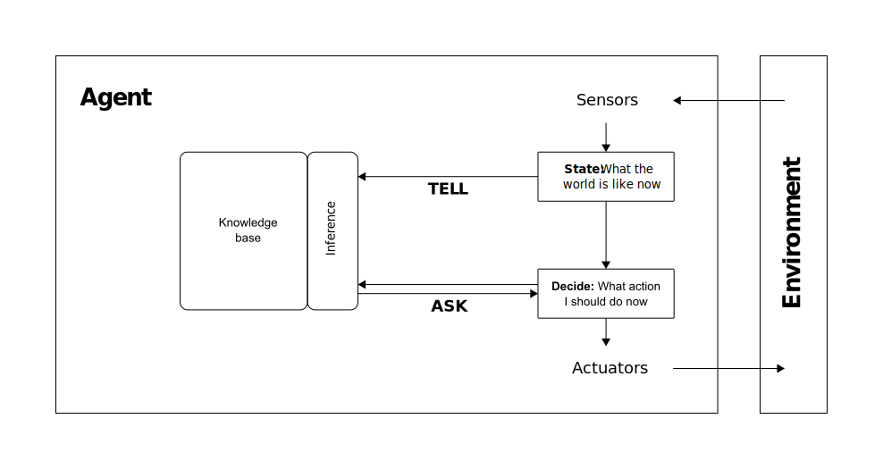

graph TD
A[Disease] --> B[Symptom 1]
A --> C[Symptom 2]
D[Risk Factor] --> A
D --> E[Comorbidity]
E --> C
Introduction
Knowledge-based agents
As discussed in the section Knowledge & Inference, knowledge-based agents combine two essential components:
- A knowledge base (KB) that stores information about the environment in a formal, structured representation
- An inference engine that applies logical rules to answer questions and derive new insights
When knowledge-based agents interact with their environment, they
- process new observations to update their knowledge,
- answer queries based on what they know, and
- make decisions by applying reasoning to their knowledge base

Traditional knowledge-based agents
Traditional knowledge-based agents use logical frameworks like propositional or first-order logic. While powerful in certain domains (such as medical diagnosis), they face significant challenges:
- Binary reasoning only — they can only represent True or False statements, with no ability to handle uncertainty or probability
- Complexity barriers — as knowledge bases grow, both representation and reasoning become increasingly difficult
- Limited expressiveness — more formal languages often sacrifice the ability to represent nuanced knowledge
From logic to probability
The limitations of traditional knowledge-based systems highlight a fundamental challenge: real-world reasoning rarely operates in absolutes of true and false. Instead, our knowledge is often incomplete, uncertain, or subject to change as new evidence emerges.
By incorporating probability theory, we can represent knowledge in a structured form while replacing rigid logical rules with probabilistic relationships.
The core of probabilistic reasoning is the joint probability distribution (JPD), which specifies the probability of every possible combination of values for all variables in our domain. For \(N\) variables, this distribution represents all possible combinations of values and their probabilities:
\[ P(X_1=x_{i_1},X_2=x_{i_2}, \ldots, X_N=x_{i_N}) \quad \text{or simply} \quad P(x_{i_1},x_{i_2}, \ldots, x_{i_N}) \]
With a complete JPD, an agent can answer two fundamental types of questions:
Joint probability queries:
What’s the likelihood of multiple events occurring together?
\(P(X_1=a,X_2=b)\)Conditional probability queries:
Given that one event has occurred, what’s the probability of another?
\(P(X_1=a \mid X_2=b)\)
The power of a complete JPD is that it contains all information needed to answer any probabilistic query about the modeled variables.
Example: Pacman
Consider a Pacman game with three key events:
- encountering a ghost (\(G\)),
- eating a power pellet (\(P\)), and
- successfully completing the level (\(L\)).
We’ve analyzed game data to create the following joint probability distribution (JPD):
| Ghost (\(G\)) | Power pellet (\(P\)) | Level complete (\(L\)) | Probability |
|---|---|---|---|
| True | True | True | 0.15 |
| True | True | False | 0.05 |
| True | False | True | 0.05 |
| True | False | False | 0.25 |
| False | True | True | 0.20 |
| False | True | False | 0.10 |
| False | False | True | 0.10 |
| False | False | False | 0.10 |
This knowledge-base tells us, for example:
- The probability that a player encounters a ghost, eats a power pellet, and completes the level is \(P(G,P,L)=0.15\)
- The probability that a player encounters no ghost, no power pellet, and fails to complete the level is \(P(\neg G, \neg P, \neg L) = 0.10\)
With this complete JPD, we can answer questions like:
- What’s the probability of encountering a ghost during gameplay? \(P(G)\)?
- What’s the probability of both encountering a ghost and eating a power pellet? \(P(G,P)\)?
- If a player encounters a ghost, what’s the probability they’ll complete the level? \(P(L \mid G)\)?
- If a player eats a power pellet, what’s the probability they’ll encounter a ghost? \(P(G \mid P)\)?
- If a player encounters a ghost and eats a power pellet, what’s the probability they’ll complete the level? \(P(L \mid G, P)\)?
The scalability problem
While a complete JPD is theoretically powerful, it quickly becomes impractical. With \(d\) variables that each take \(n\) values, the JPD requires storing \(n^d\) probabilities. For example, with just 10 binary variables, we need to store 1,024 values; with 20 variables, over a million!
Bayesian networks address these limitations by exploiting independence relationships between variables to create a more compact representation.
Bayesian Networks
By the use of Bayesian networks, complexity can be dramatically reduced by exploiting:
- Variable independence: When variables don’t influence each other
- Conditional independence: When variables are unrelated once we know the value of other variables
NoteUnconditional indendence and conditional independence
Unconditional indendence
When two variables are independent, knowing the value of one tells you nothing about the value of the other. Mathematically, we say A and B are independent if \(P(A,B) = P(A) × P(B)\).
The terms unconditional independence, variable independence, and marginal independence describe the same concept: two variables are independent without conditioning on any other variables, meaning the probability distribution of one variable is not affected by the value of the other.
For example, in the Pacman example, if encountering a ghost were completely independent of eating a power pellet, then knowing a player ate a power pellet wouldn’t change our estimate of whether they’ll encounter a ghost.
Conditional independence
This is more subtle and powerful. Variables A and B are conditionally independent given C if, once you know C, learning A gives you no additional information about B.
Mathematically:
\(P(A,B \mid C) = P(A \mid C) \cdot P(B \mid C)\)
Or equivalently:
\(P(A \mid C,B) = P(A \mid C) \quad \text{and} \quad P(B \mid C,A) = P(B \mid C)\)
For example, imagine that in Pacman:
- Ghost encounters (\(G\)) influence level completion (\(L\))
- Power pellets (\(P\)) influence level completion (\(L\))
- But once we know whether the level was completed (\(L\)), knowing about ghost encounters (\(G\)) tells us nothing new about power pellets (\(P\))
In this case, \(G\) and \(P\) would be conditionally independent given \(L\) (see fork structure.
Reasoning
Bayesian networks excel at two types of reasoning:
- Causal reasoning (predicting effects):
\(P(\text{effects} \mid \text{causes})\)
Example: “Given a patient’s symptoms, what disease do they likely have?” - Diagnostic reasoning (inferring causes):
\(P(\text{causes} \mid \text{evidence})\)
Example: “Given a patient has disease X, what symptoms might they develop?”
Structure
Bayesian networks exploit these independencies by organizing variables in a directed acyclic graphs structure where:
- Each node only depends directly on its parent nodes
- Nodes are conditionally independent of their non-descendants, given their parents
This structure dramatically reduces the number of probabilities that need to stored. Instead of storing the full JPD with \(2^n\) values (where \(n\) is the number of variables), we only need to store conditional probabilities for each node given its parents.
For instance, with 20 binary variables, a full JPD would require \(2^{20}\) ≈ 1 million probabilities, but a Bayesian network might need only a few thousand, making probabilistic reasoning computationally feasible.
Bayesian networks are directed acyclic graphs where:
- Nodes represent random variables (i.e., events or propositions about the world)
- Edges represent direct causal or influential relationships (i.e., they show which variables directly influence each other)
- Each node contains a probability distribution conditioned on its parent nodes (i.e., a conditional probability table (CPT) showing how likely its values are, based on its parent nodes’ values; \(P(X \mid parents(X))\))
NoteDirected acyclic graphs
Directed acyclic graphs (DAGs) are mathematical structures with:
- Nodes (vertices) connected by directed edges (arrows)
- No cycles or loops (you cannot follow arrows and return to a starting node)
- A partial ordering of nodes (some nodes come “before” others)
DAGs are essential in Bayesian networks because they encode conditional independence relationships and support efficient probabilistic inference algorithms.
This DAG example shows how a risk factor might influence a disease, which causes symptoms, while a comorbidity influenced by the same risk factor affects one of the symptoms.
In contrast, knowledge graphs:
- allow cycles (bidirectional relationships),
- use labeled edges to represent different types of relationships, _ primarily represent factual knowledge rather than probabilistic dependencies,
- have no acyclicity constraint, and
- focus on representing semantic connections between entities.
While both structures organize information as nodes and edges, they serve different purposes: DAGs for probabilistic reasoning and knowledge graphs for representing interconnected factual knowledge.
D-Separation
To systematically determine conditional independence relationships in Bayesian networks, we use the concept of d-separation (directional separation). D-separation provides formal criteria for identifying whether variables are conditionally independent given a set of evidence variables.
Two variables \(A\) and \(B\) are d-separated given a set of evidence variables \(E\) if all paths between \(A\) and \(B\) are “blocked” by variables in \(E\). When variables are d-separated, they are conditionally independent.
In the context of d-separation, a path being “blocked” means that information cannot flow along that path between the variables, resulting in conditional independence. When all paths between two variables are blocked, those variables are conditionally independent.
Think of a Bayesian network as a system of information channels. A path is “open” if it allows probabilistic information to flow from one variable to another. A path is “blocked” if something prevents this information flow, making the connected variables conditionally independent.
Path blocking rules
Whether a path is blocked depends on both the structure of the path and which variables we already know (our evidence variables \(E\)):
Chain structure
graph LR A-->C C-->B
- The path is blocked when \(C\) is observed (when \(C\) is in our evidence set \(E\))
- Result: \(A\) and \(B\) are conditionally independent given \(C\)
- Formally: \(P(B|A,C) = P(B|C)\) and \(P(A|B,C) = P(A|C)\)
- Example: If “Rain” causes “Wet Ground” which causes “Slippery Road”, then once we know the ground is wet, learning about rain gives us no additional information about road slipperiness
- Intuition: Once we know the middle variable’s value, the first variable can’t tell us anything new about the third variable
Fork structure
\(A \leftarrow C \rightarrow B\)
graph LR C-->A C-->B
- The path is blocked when \(C\) is observed (when \(C\) is in our evidence set \(E\))
- Result: \(A\) and \(B\) are conditionally independent given \(C\)
- Formally: \(P(A|B,C) = P(A|C)\) and \(P(B|A,C) = P(B|C)\)
- Example: If “Season” influences both “Temperature” and “Daylight Hours”, then once we know the season, learning about temperature gives us no additional information about daylight hours
- Intuition: When we know the common cause, its effects become independent of each other
Collider structure or v-structure
graph LR A-->C B-->C
The path is blocked when \(C\) and all its descendants are NOT observed
Result: \(A\) and \(B\) are marginally independent (unconditionally independent)
Formally: \(P(A|B) = P(A)\) and \(P(B|A) = P(B)\)
The path becomes unblocked when \(C\) OR any descendant of \(C\) IS observed
Result: \(A\) and \(B\) become conditionally dependent given \(C\)
Formally: \(P(A|B,C) \neq P(A|C)\) and \(P(B|A,C) \neq P(B|C)\)
Example: If both “Flu” and “Allergies” can cause “Sneezing”, then initially flu and allergies are independent. However, if we observe sneezing, knowing someone doesn’t have allergies increases the probability they have the flu
Intuition: Independent causes become dependent when we observe their common effect
Understanding d-separation allows us to identify the conditional independence assumptions encoded in a Bayesian network structure, which is crucial for both building appropriate networks and performing efficient inference.
Example: Pacman
Let’s model a Pacman video game scenario where we want to predict when the player will encounter ghosts and be defeated.
Our Bayesian network will model:
- Player Skill (\(S\)): We classify players into three skill levels:
- \(25\%\) of players are beginners (\(b\))
- \(45\%\) of players are intermediate (\(i\))
- \(30\%\) of players are advanced (\(a\))
- Level Type (\(L\)):
- \(40\%\) of levels are maze-type (\(m\))
- \(60\%\) of levels are open-area type (\(o\))
- Ghost Activity (\(G\)): There are high activity (\(h\)) and low activity (\(l\)) levels:
- For maze levels:
- Beginners face high ghost activity with probability \(0.8\)
- Intermediate players face high ghost activity with probability \(0.5\)
- Advanced players face high ghost activity with probability \(0.3\)
- For open-area levels:
- Beginners face high ghost activity with probability \(0.6\)
- Intermediate players face high ghost activity with probability \(0.4\)
- Advanced players face high ghost activity with probability \(0.2\)
- For maze levels:
- Power Pellet Collected (\(P\)):
- With high ghost activity, the probability of collecting a power pellet is \(0.7\)
- With low ghost activity, the probability of collecting a power pellet is \(0.4\)
- Player Defeated (\(D\)):
- With high ghost activity and no power pellet, defeat probability is \(0.9\)
- With high ghost activity and a power pellet, defeat probability is \(0.3\)
- With low ghost activity and no power pellet, defeat probability is \(0.4\)
- With low ghost activity and a power pellet, defeat probability is \(0.1\)
The Bayesian Network for this Pacman scenario is:
graph TD
S[Player Skill] --> G[Ghost Activity]
L[Level Type] --> G
G --> P[Power Pellet Collected]
G --> D[Player Defeated]
P --> D
In this network:
- Nodes represent our 5 key variables (Skill, Level Type, Ghost Activity, Power Pellet, Defeated)
- Edges connect variables that directly influence each other (e.g., Player Skill affects Ghost Activity)
- Missing edges indicate conditional independence (e.g., Level Type and Player Skill don’t directly affect whether a Power Pellet is collected - this influence flows through Ghost Activity)
- Each node has an associated conditional probability table (CPT) showing how likely each value is given its parent nodes’ values
Example in the Pacman Network
In our Pacman network:
flowchart TD
S[Player Skill] --> G[Ghost Activity]
L[Level Type] --> G
G --> P[Power Pellet Collected]
G --> D[Player Defeated]
P --> D
We can identify the following d-separation relationships:
- \(S\) and \(L\) are d-separated (marginally independent) because their only connecting path is through a collider at \(G\)
- This means: \(P(S|L) = P(S)\) and \(P(L|S) = P(L)\)
- \(S\) and \(P\) are d-separated given \(G\) (conditionally independent given \(G\)) because knowing \(G\) blocks the chain \(S \rightarrow G \rightarrow P\)
- This means: \(P(S|P,G) = P(S|G)\) and \(P(P|S,G) = P(P|G)\)
- \(S\) and \(D\) are d-separated given \(G\) and \(P\) (conditionally independent given both \(G\) and \(P\)) because all paths between them are blocked
- This means: \(P(S|D,G,P) = P(S|G,P)\) and \(P(D|S,G,P) = P(D|G,P)\)
- \(P\) and \(L\) are d-separated given \(G\) (conditionally independent given \(G\)) because knowing \(G\) blocks the fork \(P \leftarrow G \leftarrow L\)
- This means: \(P(P|L,G) = P(P|G)\) and \(P(L|P,G) = P(L|G)\)
However, note that:
- \(S\) and \(L\) are not d-separated given \(G\) (they become dependent when conditioning on their common effect)
- This means: \(P(S|L,G) \neq P(S|G)\) and \(P(L|S,G) \neq P(L|G)\)
- \(G\) and \(D\) are not d-separated given \(P\) (they have a direct link)
- This means: \(P(G|D,P) \neq P(G|P)\) and \(P(D|G,P) \neq P(D|P)\)
Building a Bayes net
To construct a Bayesian network that accurately models a domain:
Identify root nodes:
Start with variables that don’t depend on any others (no parents).
In our Pacman example, these are Player Skill (\(S\)) and Level Type (\(L\)).Add dependent variables in layers:
Connect variables to their direct influences.
Ghost Activity (\(G\)) depends on both Player Skill and Level Type, so it forms the second layer.Continue by causal relationship:
Add variables that depend on the previous layer.
Power Pellet (\(P\)) and part of the Player Defeated (\(D\)) probability depend on Ghost Activity.Complete all dependencies:
Ensure all influence relationships are captured.
Player Defeated (\(D\)) depends on both Ghost Activity and Power Pellet status.
The Markov blanket
The Markov blanket of a node is the minimal set of variables that shield it from the rest of the network. For any node \(X\), once you know its Markov blanket, no other variable provides additional information about \(X\).
A node’s Markov blanket consists of:
- Its parents
- Its children
- The parents of its children (other than itself)
graph TD
subgraph "Markov Blanket of X"
P1[Parent 1] --> X
P2[Parent 2] --> X
X --> C1[Child 1]
X --> C2[Child 2]
CP[Co-Parent] --> C2
end
Other1[Other Variable] --- Other2[Other Variable]
This property allows us to perform localized reasoning, making Bayesian networks computationally efficient.
Inference in Bayes nets
With a complete Bayesian network, we can calculate three types of probabilities:
- Marginal probabilities for single variables:
\(P(X=x)\) - Joint probabilities for multiple variables:
\(P(X=x,Y=y)\) - Conditional probabilities between variables:
\(P(Y=y \mid X=x)\)
Calculating marginal probabilities
For root nodes
For variables at the top of the network (like Player Skill in our Pacman example), we can directly read their probabilities from their CPT:
\[P(S=\text{advanced}) = 0.30\]
For other nodes
For variables with parents, we must use marginalization — summing over all possible parent values. For example, to find the probability of high Ghost Activity:
\[ \begin{align} & P(G=h) \\ &= \sum_{s \in \{b,i,a\}} \sum_{l \in \{m,o\}} P(G=h \mid S=s, L=l) \cdot P(S=s) \cdot P(L=l) \end{align} \]
In plain language: To find the overall probability of high ghost activity, consider every possible combination of player skill and level type, multiply the probability of that combination by the probability of high ghost activity given that combination, then sum all these products.
Calculating joint probabilities
To calculate the joint probability of multiple variables, we use the chain rule of probability applied to the structure of the Bayesian network.
For any Bayesian network with variables \(X_1, X_2, ..., X_n\), the joint probability is:
\[P(X_1=x_1, X_2=x_2, ..., X_n=x_n) = \prod_{i=1}^{n} P(X_i=x_i \mid \text{Parents}(X_i))\]
In our Pacman example, to calculate the probability of advanced player skill, original level, and high ghost activity:
\[P(S=a, L=o, G=h) = P(S=a) \cdot P(L=o) \cdot P(G=h \mid S=a, L=o)\]
If \(P(S=a) = 0.30\), \(P(L=o) = 0.40\), and \(P(G=h \mid S=a, L=o) = 0.70\)
then \(P(S=a, L=o, G=h) = 0.30 \cdot 0.40 \cdot 0.70 = 0.084\)
This calculation works because the Bayesian network structure encodes conditional independence assumptions, allowing us to decompose the joint probability into this product.
Calculating conditional probabilities
Conditional probabilities ask questions like “given that X has occurred, what is the probability of Y?”
Using Bayes’ rule directly
For simple queries, we can apply Bayes’ rule:
\[P(Y=y \mid X=x) = \frac{P(X=x \mid Y=y) \cdot P(Y=y)}{P(X=x)}\]
Using joint probabilities
More commonly in Bayesian networks, we calculate conditional probabilities using:
\[P(Y=y \mid X=x) = \frac{P(Y=y, X=x)}{P(X=x)}\]
In our Pacman example we want to find the probability of player skill given ghost activity. To find \(P(S=a \mid G=h)\) (the probability the player is advanced given high ghost activity):
Calculate the joint probability \(P(S=a, G=h)\): \[P(S=a, G=h) = \sum_{l \in \{m,o\}} P(S=a) \cdot P(L=l) \cdot P(G=h \mid S=a, L=l)\]
Calculate the marginal probability \(P(G=h)\) using marginalization as shown earlier.
Apply the conditional probability formula: \[P(S=a \mid G=h) = \frac{P(S=a, G=h)}{P(G=h)}\]
When we have evidence on multiple variables, the calculation extends naturally.
For example, to find \(P(S=a \mid G=h, L=o)\):
\[ \begin{align} & P(S=a \mid G=h, L=o) = \frac{P(S=a, G=h, L=o)}{P(G=h, L=o)} \\ & = \frac{P(S=a) \cdot P(L=o) \cdot P(G=h \mid S=a, L=o)}{P(G=h, L=o)} \end{align} \]
The denominator \(P(G=h, L=o)\) can be calculated by summing over all possible values of \(S\):
\[ \begin{align} & P(G=h, L=o) \\ & = \sum_{s \in \{b,i,a\}} P(S=s) \cdot P(L=o) \cdot P(G=h \mid S=s, L=o) \end{align} \]
Law of Total Probability
The law of total probability is a fundamental rule that allows us to calculate the probability of an event by considering all the ways that event can occur. For any variable \(Y\) and another variable \(X\) with possible values \(x_1, x_2, ..., x_n\):
\[P(Y=y) = \sum_{i=1}^{n} P(Y=y \mid X=x_i) \cdot P(X=x_i)\]
This law naturally emerges from the marginalization process and is particularly useful when calculating probabilities of variables that are not directly connected in a Bayesian network.
For example, to calculate \(P(R=True)\) (the probability a patient requires insulin treatment) in our diabetes model, we can apply the law of total probability using HbA1c levels:
\[\begin{align} P(R=True) &= P(R=True \mid B=h) \cdot P(B=h) \\ & + P(R=True \mid B=l) \cdot P(B=l) \\ &= 0.7 \cdot P(B=h) + 0.1 \cdot P(B=l) \end{align}\]
Similarly, when calculating conditional probabilities between variables that are not directly connected, like \(P(R=True \mid T=t1)\), we can use an expanded form:
\[\begin{align} P(R=True \mid T=t1) &= P(R=True \mid B=h) \cdot P(B=h \mid T=t1) \\ & + P(R=True \mid B=l) \cdot P(B=l \mid T=t1) \end{align}\]
This approach explicitly accounts for how information flows through the intermediate variable \(B\) in our network.
Common misconceptions
When working with Bayesian networks, students often encounter several conceptual hurdles. Being aware of these common misconceptions can help you avoid errors in both understanding and application.
Confusing causality with conditional dependence
- Misconception: Assuming that an edge \(A \rightarrow B\) in a Bayesian network means that \(A\) is always the cause of \(B\) in the real world.
- Reality: Edges represent statistical dependencies, not necessarily causation. While Bayesian networks are often built to reflect causal relationships, the arrows formally indicate conditional probability relationships.
- Example: In a medical diagnostic network, a disease node might point to a symptom node, reflecting causality. However, the same probabilistic relationship could be modeled in reverse for diagnostic reasoning.
Misinterpreting missing edges
- Misconception: Assuming that if there’s no edge between nodes \(X\) and \(Y\), they must be completely independent.
- Reality: Nodes without direct connections might still be dependent through other paths. Only specific independence relationships are guaranteed by the network structure (as defined by d-separation).
- Example: In our Pacman example, there’s no direct edge from Player Skill to Power Pellet, but they are still statistically dependent because Player Skill influences Ghost Activity, which influences Power Pellet collection.
Confusing joint and conditional probabilities
- Misconception: Mistaking \(P(A, B)\) for \(P(A \mid B)\) or vice versa in calculations.
- Reality: These are fundamentally different quantities. The joint probability \(P(A, B)\) represents the probability of both events occurring, while the conditional probability \(P(A \mid B)\) represents the probability of \(A\) occurring given that \(B\) has occurred.
- Example: In the Pacman network, \(P(G=h, L=m)\) is the probability of high ghost activity in a maze level, while \(P(G=h \mid L=m)\) is the probability of high ghost activity given that we know we’re in a maze level.
Neglecting the chain rule factorization
- Misconception: Calculating the joint probability of all variables incorrectly, often by multiplying probabilities without respecting the network structure.
- Reality: In a Bayesian network, the joint probability factorizes according to the network structure: \(P(X_1, X_2, ..., X_n) = \prod_{i=1}^{n} P(X_i \mid \text{Parents}(X_i))\).
- Example: In our diabetes example, \(P(A, T, B, R) = P(A) \cdot P(T) \cdot P(B \mid A, T) \cdot P(R \mid B)\), not simply the product of all marginal probabilities.
Misapplying Bayes’ rule
- Misconception: Incorrectly applying Bayes’ rule, especially when dealing with multiple variables.
- Reality: Bayes’ rule states that \(P(A \mid B) = \frac{P(B \mid A) \cdot P(A)}{P(B)}\). When multiple variables are involved, careful attention must be paid to which variables are being conditioned on.
- Example: To find \(P(S=a \mid G=h)\) in the Pacman example, we need \(P(G=h \mid S=a) \cdot P(S=a) / P(G=h)\), where \(P(G=h)\) must be calculated by marginalizing over both \(S\) and \(L\).
Remember that these misconceptions often arise from the complexity of probabilistic thinking rather than simple carelessness. Taking time to clearly write out the appropriate formulas and checking each step of your calculations can help avoid many of these common errors.
Exercises
Basic probabilities
Consider a simple Bayesian network with two binary variables: Cloudy (\(C\)) and Rain (\(R\)), where Cloudy is a parent of Rain.
The conditional probability tables are:
- \(P(C=\text{true}) = 0.3\)
- \(P(R=\text{true} \mid C=\text{true}) = 0.8\)
- \(P(R=\text{true} \mid C=\text{false}) = 0.1\)
What is the joint probability \(P(C=\text{true}, R=\text{true})\)?
TipSolution notes
Using the chain rule for Bayesian networks:
\[ \begin{flalign} P(C=\text{true}, R=\text{true}) &= P(R=\text{true} \mid C=\text{true}) \cdot P(C=\text{true}) \\ &= 0.8 \cdot 0.3 = 0.24 \end{flalign} \]
The probability of it being both cloudy and rainy is 0.24 or 24%.
What is the marginal probability \(P(R=\text{true})\)?
TipSolution notes
To find the marginal probability, we need to marginalize over all possible values of \(C\):
\[ \begin{flalign} P(R=\text{true}) &= P(R=\text{true} \mid C=\text{true}) \cdot P(C=\text{true}) \\ & + P(R=\text{true} \mid C=\text{false}) \cdot P(C=\text{false}) \end{flalign} \] \[ \begin{flalign} P(R=\text{true}) &= 0.8 \cdot 0.3 + 0.1 \cdot 0.7 \\ &= 0.24 + 0.07 = 0.31 \end{flalign} \]
The probability of rain, regardless of cloudiness, is 0.31 or 31%.
Using the weather network from Questions 1 and 2, what is the probability that it’s cloudy given that it’s raining? That is, calculate \(P(C=\text{true} \mid R=\text{true})\).
TipSolution notes
We use Bayes’ rule:
\(P(C=\text{true} \mid R=\text{true}) = \frac{P(R=\text{true} \mid C=\text{true}) \cdot P(C=\text{true})}{P(R=\text{true})}\)
We already calculated:
\(P(R=\text{true} \mid C=\text{true}) = 0.8\) \(P(C=\text{true}) = 0.3\) \(P(R=\text{true}) = 0.31\)
So: \(P(C=\text{true} \mid R=\text{true}) = \frac{0.8 \cdot 0.3}{0.31} = \frac{0.24}{0.31} \approx 0.774\)
There’s about a 77.4% chance it’s cloudy, given that it’s raining.
Conditional independence
Consider a Bayesian network with three binary variables: Season (\(S\)), Temperature (\(T\)), and Ice Cream Sales (\(I\)), structured as \(S \rightarrow T \rightarrow I\) (Season affects Temperature, which affects Ice Cream Sales).
Are Season (\(S\)) and Ice Cream Sales (\(I\)) conditionally independent given Temperature (\(T\))? Explain your answer.
TipSolution notes
Yes, Season (\(S\)) and Ice Cream Sales (\(I\)) are conditionally independent given Temperature (\(T\)).
In a Bayesian network, a variable is conditionally independent of its non-descendants given its parents. Looking at the structure \(S \rightarrow T \rightarrow I\), when we know the value of Temperature (\(T\)), the value of Season (\(S\)) provides no additional information about Ice Cream Sales (\(I\)). This is because all the influence of Season on Ice Cream Sales flows through Temperature.
Mathematically, this means: \(P(I \mid T, S) = P(I \mid T)\)
For example, if we know it’s hot (high Temperature), then Ice Cream Sales are likely high regardless of whether it’s summer or winter. The season only affects ice cream sales by affecting temperature.
D-Separation
Consider a Bayesian network with the following structure:
graph LR
A-->C
B-->C
Are variables \(A\) and \(B\) independent? What about if we condition on \(C\)?
TipSolution notes
\(A\) and \(B\) are marginally independent (unconditionally independent) because there’s no direct path between them and no common cause. This means \(P(A,B) = P(A) \cdot P(B)\).
However, \(A\) and \(B\) become conditionally dependent when we condition on their common effect \(C\). This is known as “explaining away” - once we know the value of the effect \(C\), knowing the value of one cause provides information about the other cause. This means \(P(A \mid B, C) \neq P(A \mid C)\).
For example, if \(A\) represents “Sprinkler On”, \(B\) represents “Rain”, and \(C\) represents “Grass is Wet”, then Sprinkler and Rain are independent events. But if we know the grass is wet, learning the sprinkler was off increases the probability that it rained (explaining away).
Pacman
Please use the given JPD to answer the questions raised here.
TipSolution notes
What’s the probability of encountering a ghost during gameplay? \(P(G)\)?
To find \(P(G)\), we need to sum all probabilities where \(G\) is True:
\[P(G) = P(G,P,L) + P(G,P,\neg L) + P(G,\neg P,L) + P(G,\neg P,\neg L)\] \[P(G) = 0.15 + 0.05 + 0.05 + 0.25\] \[P(G) = 0.50\]
So there’s a 50% chance of encountering a ghost during gameplay.
What’s the probability of both encountering a ghost and eating a power pellet? \(P(G,P)\)?
To find \(P(G,P)\), we need to sum all probabilities where both \(G\) and \(P\) are True:
\[P(G,P) = P(G,P,L) + P(G,P,\neg L)\] \[P(G,P) = 0.15 + 0.05\] \[P(G,P) = 0.20\]
So there’s a 20% chance of both encountering a ghost and eating a power pellet.
If a player encounters a ghost, what’s the probability they’ll complete the level? \(P(L|G)\)?
This is a conditional probability, calculated as:
\[P(L|G) = \frac{P(L,G)}{P(G)}\]
\[P(L,G) = P(G,P,L) + P(G,\neg P,L) = 0.15 + 0.05 = 0.20\] \[P(G) = 0.50\]
Therefore:
\[P(L|G) = \frac{0.20}{0.50} = 0.40\]
So if a player encounters a ghost, there’s a 40% chance they’ll complete the level.
If a player eats a power pellet, what’s the probability they’ll encounter a ghost? \(P(G|P)\)?
This conditional probability is:
\[P(G|P) = \frac{P(G,P)}{P(P)}\]
\[P(G,P) = 0.20\]
\[ \begin{flalign} P(P) &= P(G,P,L) + P(G,P,\neg L) + P(\neg G,P,L) + P(\neg G,P,\neg L) \\ &= 0.15 + 0.05 + 0.20 + 0.10 = 0.50 \end{flalign} \]
Therefore:
\[P(G|P) = \frac{0.20}{0.50} = 0.40\]
So if a player eats a power pellet, there’s a 40% chance they’ll encounter a ghost.
If a player encounters a ghost and eats a power pellet, what’s the probability they’ll complete the level? \(P(L|G,P)\)?
This conditional probability is:
\[P(L|G,P) = \frac{P(L,G,P)}{P(G,P)}\]
\[P(L,G,P) = 0.15\] \[P(G,P) = 0.20\]
Therefore:
\[P(L|G,P) = \frac{0.15}{0.20} = 0.75\]
So if a player both encounters a ghost and eats a power pellet, there’s a 75% chance they’ll complete the level.
Medical diagnosis
Consider a diagnostic model for diabetes with the following variables and conditional probability tables (CPTs):
- Age (\(A\)): Patient’s age group
- Young (\(y\)): 20% (under 40 years)
- Middle-aged (\(m\)): 40% (40-60 years)
- Older (\(o\)): 40% (over 60 years)
- Diabetes Type (\(T\)): Classification of diabetes
- Type 1 (\(t1\)): 30% (autoimmune form, typically insulin-dependent)
- Type 2 (\(t2\)): 70% (insulin resistance form, often lifestyle-related)
- HbA1c Level (\(B\)): Glycated hemoglobin blood test result
- Low (\(l\)): Within normal or slightly elevated range (below 7.0%)
- High (\(h\)): Significantly elevated (7.0% or higher)
- Probabilities depend on Age and Diabetes Type as follows:
- Young patient with Type 1 diabetes: \(P(B=h|A=y,T=t1) = 0.1\)
- Young patient with Type 2 diabetes: \(P(B=h|A=y,T=t2) = 0.3\)
- Middle-aged patient with Type 1 diabetes: \(P(B=h|A=m,T=t1) = 0.6\)
- Middle-aged patient with Type 2 diabetes: \(P(B=h|A=m,T=t2) = 0.5\)
- Older patient with Type 1 diabetes: \(P(B=h|A=o,T=t1) = 0.7\)
- Older patient with Type 2 diabetes: \(P(B=h|A=o,T=t2) = 0.9\)
- Insulin Treatment (\(R\)): Whether insulin therapy is required
- Required (True): Probability depends on HbA1c level
- With high HbA1c: \(P(R=True|B=h) = 0.7\)
- With low HbA1c: \(P(R=True|B=l) = 0.1\)
- Required (True): Probability depends on HbA1c level
This Bayesian network is structured such that Age and Diabetes Type are parent nodes for HbA1c Level, and HbA1c Level is the parent node for Insulin Treatment.
flowchart TD
A["Age (A)"] --> B["HbA1c Level (B)"]
T["Diabetes Type (T)"] --> B
B --> R["Insulin Treatment (R)"]
Tasks
- Calculate the marginal probability \(P(B=h)\), i.e., the probability that a patient has a high HbA1c level.
- Calculate the joint probabilitySo \(P(A=o,T=t1,B=h,R=True)\), i.e., the probability of an older patient with Type 1 diabetes who has a high HbA1c level and requires insulin treatment.
- Calculate the joint probability \(P(A=o,B=h,R=True)\), i.e., the probability of an older patient with a high HbA1c level who requires insulin treatment.
- Calculate the conditional probability \(P(R=True|T=t1)\), i.e., the probability that a patient with Type 1 diabetes requires insulin treatment.
TipHint for Task 1
Remember to marginalize over all possible combinations of parent variables (Age and Diabetes Type). Start by writing out the full marginalization equation, then convert joint probabilities to conditional probabilities using the chain rule.
TipHint for Task 4
This requires application of the total probability theorem. Since \(R\) and \(T\) are conditionally independent given \(B\), you’ll need to compute:
\[ \begin{flalign} P(R=True|T=t1) &= P(R=True|B=l) \cdot P(B=l|T=t1) \\ & + P(R=True|B=h) \cdot P(B=h|T=t1) \end{flalign} \]
But \(P(B=l|T=t1)\) and \(P(B=h|T=t1)\) are not directly available in the CPTs and require marginalization over Age.
TipSolution notes
Task 1: Calculate \(P(B=h)\)
The parents of variable HbA1c Level (B) are Age (A) and Diabetes Type (T). Therefore we must marginalize over the values of these two parent variables:
\[\begin{align} P(B=h) &= P(B=h,T=t1,A=y) + P(B=h,T=t2,A=y) \\ &+ P(B=h,T=t1,A=m) + P(B=h,T=t2,A=m) \\ &+ P(B=h,T=t1,A=o) + P(B=h,T=t2,A=o) \end{align}\]
To simplify notation, we’ll omit the variable names and keep only the values:
\[\begin{align} P(h) &= P(h,t1,y) + P(h,t2,y) \\ &+ P(h,t1,m) + P(h,t2,m) \\ &+ P(h,t1,o) + P(h,t2,o) \end{align}\]
Converting joint probabilities to conditional probabilities:
\[\begin{align} P(h) &= P(h \mid t1,y) \cdot P(t1,y) + P(h \mid t2,y) \cdot P(t2,y) \\ &+ P(h \mid t1,m) \cdot P(t1,m) + P(h \mid t2,m) \cdot P(t2,m) \\ &+ P(h \mid t1,o) \cdot P(t1,o) + P(h \mid t2,o) \cdot P(t2,o) \end{align}\]
Since Age and Diabetes Type are independent:
\[\begin{align} P(h) &= P(h \mid t1,y) \cdot P(t1) \cdot P(y) + P(h \mid t2,y) \cdot P(t2) \cdot P(y) \\ &+ P(h \mid t1,m) \cdot P(t1) \cdot P(m) + P(h \mid t2,m) \cdot P(t2) \cdot P(m) \\ &+ P(h \mid t1,o) \cdot P(t1) \cdot P(o) + P(h \mid t2,o) \cdot P(t2) \cdot P(o) \end{align}\]
Substituting the values from the CPTs:
\[\begin{align} P(h) &= 0.1 \cdot 0.3 \cdot 0.2 + 0.3 \cdot 0.7 \cdot 0.2 \\ &+ 0.6 \cdot 0.3 \cdot 0.4 + 0.5 \cdot 0.7 \cdot 0.4 \\ &+ 0.7 \cdot 0.3 \cdot 0.4 + 0.9 \cdot 0.7 \cdot 0.4 \\ &= 0.006 + 0.042 + 0.072 + 0.14 + 0.084 + 0.252 \\ &= 0.596 \end{align}\]
Therefore, the probability of a patient having a high HbA1c level is 59.6%.
Task 2: Calculate \(P(A=o,T=t1,B=h,R=True)\)
According to the chain rule of probability applied to the Bayesian network structure (as introduced in the section calculating joint probabilities), we can calculate this joint probability as:
\[\begin{align} P(o,t1,h,r) &= P(r \mid h) \cdot P(h \mid o,t1) \cdot P(o) \cdot P(t1) \\ &= 0.7 \cdot 0.7 \cdot 0.4 \cdot 0.3 \\ &= 0.0588 \end{align}\]
Therefore, the probability of an older patient with Type 1 diabetes who has a high HbA1c level and requires insulin treatment is 5.88%.
Task 3: Calculate \(P(A=o,B=h,R=True)\)
In this case, we don’t know the value of Diabetes Type, so we need to marginalize over it:
\[\begin{align} P(o,h,r) &= P(r \mid h) \cdot \left[ P(h \mid o,t1) \cdot P(o) \cdot P(t1) + P(h \mid o,t2) \cdot P(o) \cdot P(t2)\right] \\ &= 0.7 \cdot \left[ 0.7 \cdot 0.4 \cdot 0.3 + 0.9 \cdot 0.4 \cdot 0.7 \right] \\ &= 0.7 \cdot [0.084 + 0.252] \\ &= 0.7 \cdot 0.336 \\ &= 0.2352 \end{align}\]
Therefore, the probability of an older patient with a high HbA1c level who requires insulin treatment is 23.52%.
Task 4: Calculate \(P(R=True \mid T=t1)\)
Looking at the Bayesian network structure, we can determine that \(R\) and \(T\) are conditionally independent given \(B\), as explained in the conditional independence section of the lecture. Therefore, we can apply the law of total probability (which follows from the marginalization process we’ve learned):
\[P(r \mid t1) = P(r\mid l) \cdot P(l \mid t1) + P(r \mid h) \cdot P(h \mid t1)\]
We know \(P(r\mid l) = 0.1\) and \(P(r \mid h) = 0.7\) from the CPTs, but we need to calculate \(P(l \mid t1)\) and \(P(h \mid t1)\).
Since \(B\) depends on both \(T\) and \(A\), we need to marginalize over \(A\):
\[\begin{align} P(h \mid t1) &= P(h\mid t1,y) \cdot P(y) + P(h\mid t1,m) \cdot P(m) + P(h\mid t1,o) \cdot P(o) \\ &= 0.1 \cdot 0.2 + 0.6 \cdot 0.4 + 0.7 \cdot 0.4 \\ &= 0.02 + 0.24 + 0.28 \\ &= 0.54 \end{align}\]
Since \(P(l \mid t1) = 1 - P(h \mid t1) = 1 - 0.54 = 0.46\)
Now we can calculate \(P(r \mid t1)\):
\[\begin{align} P(r \mid t1) &= 0.1 \cdot 0.46 + 0.7 \cdot 0.54 \\ &= 0.046 + 0.378 \\ &= 0.424 \end{align}\]
Therefore, the probability that a patient with Type 1 diabetes requires insulin treatment is 42.4%.
Literature
Footnotes
Variable elimination is an algorithm that computes exact marginal probabilities by systematically “eliminating” variables through summation, reducing computational complexity by exploiting conditional independence relationships.↩︎
Belief propagation (also known as message passing) works by having nodes in the network exchange “messages” containing probability information, enabling efficient inference even in networks with loops.↩︎
Sampling methods like Markov Chain Monte Carlo (MCMC) and Gibbs sampling approximate probability distributions by generating random samples, making them useful for very large networks where exact inference is intractable.↩︎